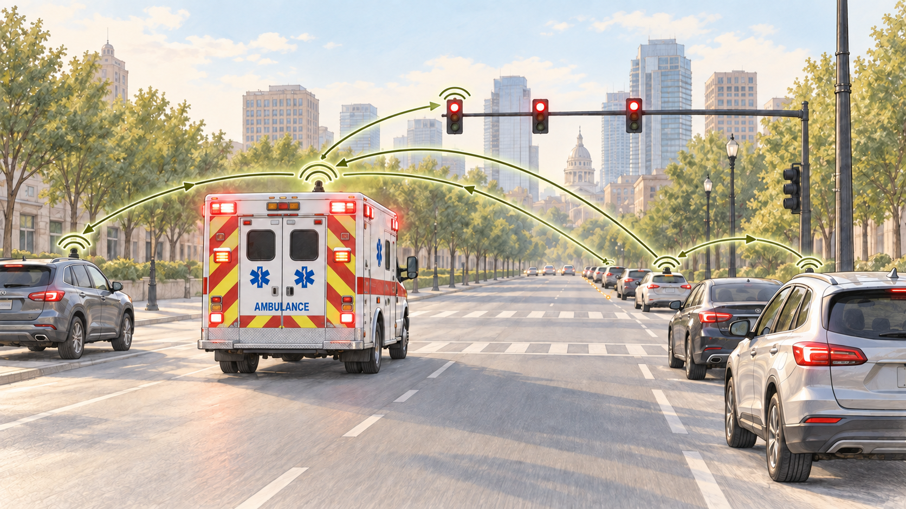

A clearer path for emergency response.
Explore how ClearPath could connect drivers, emergency vehicles, and intersections.
Explore the concept Share feedback
How It Works
ClearPath is designed to connect emergency vehicles, nearby drivers, and traffic signals automatically.
- An ambulance's siren activates its ClearPath signal.
- Nearby drivers receive an alert that an emergency vehicle is approaching.
- ClearPath requests priority at equipped intersections to help the ambulance move through.
Explore ClearPath
Learn about the proposed features and how they could help drivers and emergency responders.
Emergency vehicle alerts
Could notify nearby drivers when an emergency vehicle is approaching.
Drivers - Responders
Automatic signaling
Could automatically send an emergency signal when an ambulance's siren is activated.
Responders - City planners
Intersection coordination
Could request traffic-signal priority to help emergency vehicles move through intersections.
Responders - City planners
Questions and feedback
ClearPath explores how technology could support faster, safer emergency response. Your questions and suggestions help guide our ideas and show what matters to the community.